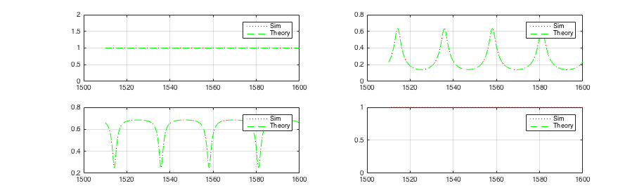
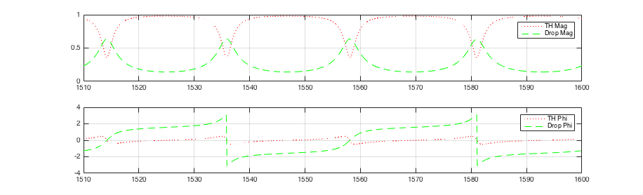
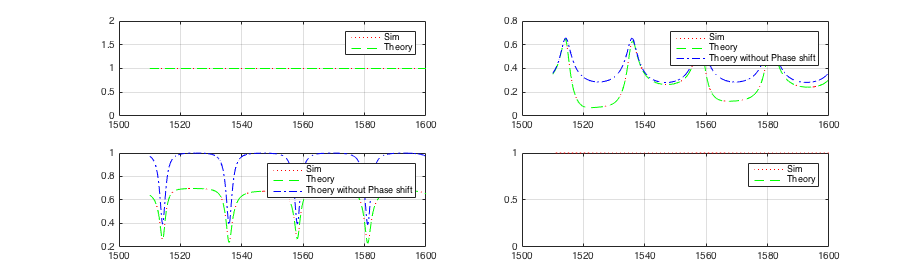
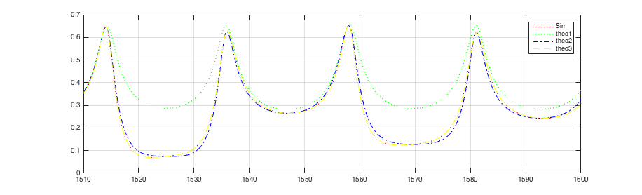
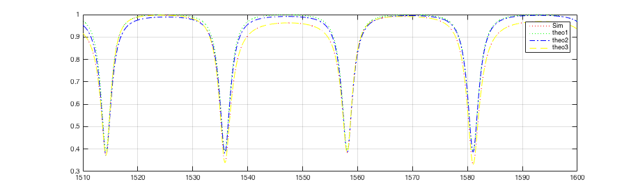

%set(0,'DefaultFigureWindowStyle','docked'); set(0,'defaultAxesXGrid','on'); set(0,'defaultAxesYGrid','on'); set(groot,'defaultAxesColorOrder',[1 0 0;0 1 0;0 0 1;1 1 0],'defaultAxesLineStyleOrder',{'--',':'}); set(0,'DefaultLineMarkerSize',1); base1= 'ringWGXRCross'; outputFile =load('ringWGXRCross.1-DC.2d_dat'); Ref1=0.1; TH1=0.7; Right1= 0.15; Left1= 0.4; base2= 'ringWGXRCrossIdeal'; outputFileIdeal = load('ringWGXRCrossIdeal.1-DC.2d_dat'); Ref2=0.0; TH2=1.0; Right2= 0.0; Left2= 0.0; base3= 'ringWGXRCrossTH'; outputFileTH = load('ringWGXRCrossTH.1-DC.2d_dat'); Ref3=0.0; TH3=0.7; Right3= 0.0; Left3= 0.0; base4= 'ringWGXRCrossRef'; outputFileRef = load('ringWGXRCrossRef.1-DC.2d_dat'); Ref4=0.1; TH4=0.7; Right4= 0.0; Left4= 0.0; base5= 'ringWGXRCrossRefRight'; outputFileRefRight = load('ringWGXRCrossRefRight.1-DC.2d_dat'); Ref5=0.1; TH5=0.7; Right5= 0.15; Left5= 0.0; base6= 'ringWGXRCrossRight'; outputFileRight = load('ringWGXRCrossRight.1-DC.2d_dat'); Ref6=0.0; TH6=0.7; Right6= 0.3; Left6= 0.0; base7= 'ringWGXRCrossLeft'; outputFileLeft = load('ringWGXRCrossLeft.1-DC.2d_dat'); Ref7=0.0; TH7=0.7; Right7= 0.0; Left7= 0.2; basePath = '/Users/sanam/phd/GitThesis/optics/scripts/matlabSpice/cross/'; x=outputFile(:,1); % TH circuit N61InTH=10.^(outputFileTH(:,2)./20); N62InTH=10.^(outputFileTH(:,3)./20); N63InTH=10.^(outputFileTH(:,4)./20); N64InTH=10.^(outputFileTH(:,5)./20); N61OutTH=10.^(outputFileTH(:,6)./20); N62OutTH=10.^(outputFileTH(:,7)./20); N63OutTH=10.^(outputFileTH(:,8)./20); N64OutTH=10.^(outputFileTH(:,9)./20); w3eOutTH=10.^(outputFileTH(:,20)./20); w4nOutTH=10.^(outputFileTH(:,21)./20); % Mag and Phi from dataSet N61InTHMag=outputFileTH(:,22); N61InTHPhi=outputFileTH(:,23); N62InTHMag=outputFileTH(:,24); N62InTHPhi=outputFileTH(:,25); N63OutTHMag=outputFileTH(:,34); N63OutTHPhi=outputFileTH(:,35); % Convert to Real/Imag % TH cir. N61InTHEr= N61InTHMag.*cos(N61InTHPhi); N61InTHEi= N61InTHMag.*sin(N61InTHPhi); N62InTHEr= N62InTHMag.*cos(N62InTHPhi); N62InTHEi= N62InTHMag.*sin(N62InTHPhi); N63OutTHEr= N63OutTHMag.*cos(N63OutTHPhi); N63OutTHEi= N63OutTHMag.*sin(N63OutTHPhi); % Build the transer functions % Power fTH_TH=N63OutTH.*(N61InTH.^(-1)); % Input-Through Power transfer function for TH cir. fDrop_TH=N62InTH.*(N61InTH.^(-1)); % Input-Drop Power transferfunction for TH cir. % Mag/Phase fTH_TH_Mag=N63OutTHMag.*(N61InTHMag.^(-1)); % Input-Through Mag transfer function for TH cir. fTH_TH_Phi=N63OutTHPhi-N61InTHPhi; % Input-Through Phase transfer function for TH cir. fDrop_TH_Mag=N62InTHMag.*(N61InTHMag.^(-1)); % Input-Drop Mag transfer function for TH cir. fDrop_TH_Phi=N62InTHPhi-N61InTHPhi; % Input-Drop Phi transfer function for TH cir. % Expected N1TH=N61InTH; N2TH=N62InTH; N3TH=TH3.*N63OutTH; N4TH= 0; % Plot of TH circuit figure('name','Circuit TH, 4 ports','numbertitle','off'); subplot(2,2,1); plot(x,N61InTH,':r',x,N1TH,'--g'); legend('Sim','Theory'); subplot(2,2,2); plot(x,N62InTH,':r',x,N2TH,'--g'); legend('Sim','Theory'); subplot(2,2,3); plot(x,w3eOutTH,':r',x,N3TH,'--g'); legend('Sim','Theory'); subplot(2,2,4); plot(x,w4nOutTH,':r',x,N4TH,'--g'); legend('Sim','Theory'); figure('name','Circuit TH, Transfer functions','numbertitle','off'); subplot(2,1,1); plot(x,fTH_TH_Mag,':r',x,fDrop_TH_Mag,'--g'); legend('TH Mag','Drop Mag'); subplot(2,1,2); plot(x,fTH_TH_Phi,':r',x,fDrop_TH_Phi,'--g'); legend('TH Phi','Drop Phi'); %%%%%%%%%%%%%%%%%%%%%%%%%%%%%%%%%%%%%%%%%%%%%%%%%% % Right circuit N61InRight=10.^(outputFileRight(:,2)./20); N62InRight=10.^(outputFileRight(:,3)./20); N63InRight=10.^(outputFileRight(:,4)./20); N64InRight=10.^(outputFileRight(:,5)./20); N61OutRight=10.^(outputFileRight(:,6)./20); N62OutRight=10.^(outputFileRight(:,7)./20); N63OutRight=10.^(outputFileRight(:,8)./20); N64OutRight=10.^(outputFileRight(:,9)./20); w3eOutRight=10.^(outputFileRight(:,20)./20); w4nOutRight=10.^(outputFileRight(:,21)./20); % Mag and Phi from dataSet N62InRightMag=outputFileRight(:,24); N62InRightPhi=outputFileRight(:,25); N64InRightMag=outputFileRight(:,28); N64InRightPhi=outputFileRight(:,29); N63OutRightMag=outputFileRight(:,34); N63OutRightPhi=outputFileRight(:,35); % Convert to Real/Imag % Right cir. N62InRightEr= N62InRightMag.*cos(N62InRightPhi); N62InRightEi= N62InRightMag.*sin(N62InRightPhi); N64InRightEr= N64InRightMag.*cos(N64InRightPhi); N64InRightEi= N64InRightMag.*sin(N64InRightPhi); N63OutRightEr= N63OutRightMag.*cos(N63OutRightPhi); N63OutRightEi= N63OutRightMag.*sin(N63OutRightPhi); % Expected 1 % N64InRight will have 2 components. % 1- Out of resonase signals will go through the wg and appear at N62In (N64InRight_fTH) % 2- Resonase signals will go through the ring (the Drop filter) and show up at N63Out (N64InRight_fDrop) % ====> % Calculation components of N62IN = % (1) Drop of Ring with N61In as input (N62InTH) + % (2) Th of Ring with N64In as input (N64InRight_fTH) % Theo1: Not cosidering phase shift, just working with powers transfer function of (fTH_TH) N64InRight_fTH= fTH_TH.* N64InRight; %Th of Ring 6 with N64In as input N62InRight_theo1= N62InTH + N64InRight_fTH; % Theo2: Working with transfer function of power (fTH_TH) and Real/Imag % Still not accurate enough N62InRightEr_theo2= N62InTHEr + fTH_TH.*N64InRightEr; N62InRightEi_theo2= N62InTHEi + fTH_TH.*N64InRightEi; N62InRight_theo2 = sqrt(N62InRightEr_theo2.^2 + N62InRightEi_theo2.^2); %N62InRightEr_theo2= N62InTHEr + (fTH_TH.^0.5).*N64InRightEr; %N62InRightEi_theo2= N62InTHEi + (fTH_TH.^0.5).*N64InRightEi; %N62InRight_theo2 = sqrt(N62InRightEr_theo3.^2 + N62InRightEi_theo3.^2); % Theo3: working with Mag/Phase and seperate transfer functions for Mag/Phase % GOOD Match, accurate N64InRight_fTH_Mag = fTH_TH_Mag.*N64InRightMag; N64InRight_fTH_Phi = fTH_TH_Phi+N64InRightPhi; % Convert to Real/Imag N64InRight_fTH_Er= N64InRight_fTH_Mag.*cos(N64InRight_fTH_Phi); N64InRight_fTH_Ei= N64InRight_fTH_Mag.*sin(N64InRight_fTH_Phi); % Add up N62InRightEr_theo3= N62InTHEr + N64InRight_fTH_Er; N62InRightEi_theo3= N62InTHEi + N64InRight_fTH_Ei; N62InRight_theo3 = sqrt(N62InRightEr_theo3.^2 + N62InRightEi_theo3.^2); % ====> % Calculation components of N63Out= % (1) Th of Ring with N61In as input (N62InTH) + % (2) Drop of Ring with N64In as input N64InRight_fDrop % Theo1: Not cosidering phase shift, just working with powers. N64InRight_fDrop= fDrop_TH.* N64InRight; %Dro of Ring 6 with N64In as input N63OutRight_theo1= N63OutTH + N64InRight_fDrop; % Theo2: Working with transfer function of power (fDrop_TH) and Real/Imag % Still not accurate enough N63OutRightEr_theo2= N63OutTHEr + fDrop_TH.*N64InRightEr; N63OutRightEi_theo2= N63OutTHEi + fDrop_TH.*N64InRightEi; N63OutRight_theo2 = sqrt(N63OutRightEr_theo2.^2 + N63OutRightEi_theo2.^2); % Theo3: working with Mag/Phase and seperate transfer functions for Mag/Phase % GOOD Match, accurate N64InRight_fDrop_Mag = fDrop_TH_Mag.*N64InRightMag; N64InRight_fDrop_Phi = fDrop_TH_Phi+N64InRightPhi; % Convert to Real/Imag N64InRight_fDrop_Er= N64InRight_fDrop_Mag.*cos(N64InRight_fDrop_Phi); N64InRight_fDrop_Ei= N64InRight_fDrop_Mag.*sin(N64InRight_fDrop_Phi); % Add up N63OutRightEr_theo3= N63OutTHEr + N64InRight_fDrop_Er; N63OutRightEi_theo3= N63OutTHEi + N64InRight_fDrop_Ei; N63OutRight_theo3 = sqrt(N63OutRightEr_theo3.^2 + N63OutRightEi_theo3.^2); % Expected N1Right=N61InRight; N2Right=N62InRight_theo3; N3Right=TH3.*N63OutRight_theo3; N4Right= 0; % Plot of Right cir. figure('name','Circuit Right, 4 ports','numbertitle','off'); subplot(2,2,1); plot(x,N61InRight,':r',x,N1Right,'--g'); legend('Sim','Theory'); subplot(2,2,2); plot(x,N62InRight,':r',x,N2Right,'--g',x,N62InRight_theo1,'-.b'); legend('Sim','Theory', 'Thoery without Phase shift'); subplot(2,2,3); plot(x,w3eOutRight,':r',x,N3Right,'--g',x,N63OutRight_theo1,'-.b'); legend('Sim','Theory', 'Thoery without Phase shift'); subplot(2,2,4); plot(x,w4nOutRight,':r',x,N4Right,'--g'); legend('Sim','Theory'); figure('name','Circuit Right, Drop(In dir.)','numbertitle','off'); plot(x,N62InRight,':r',x,N62InRight_theo1,':g',x,N62InRight_theo2,'-.b',x,N62InRight_theo3,'--y'); legend('Sim','theo1','theo2','theo3'); figure('name','Circuit Right, Th(Out dir.)','numbertitle','off'); plot(x,N63OutRight,':r',x,N63OutRight_theo1,':g',x,N63OutRight_theo2,'-.b',x,N63OutRight_theo3,'--y'); legend('Sim','theo1','theo2','theo3'); %Plot of Right cir. % figure('name','Circuit Right, no Phase shift, Drop(In dir.) Power details','numbertitle','off'); % plot(x,N62InRight,':r',x,N62InRight_theo1,'--g'); % legend('Drop of the Right cir.', 'Drop_theo = Drop of TH cir + Add of Right cir'); % figure('name','Circuit Right, no Phase shift, Th(Out dir.) Power details','numbertitle','off'); % subplot(2,1,1); % plot(x,N63OutRight,':r',x,N63OutRight_theo1,'--g'); % legend('Sim', 'theo1'); % subplot(2,1,2); % plot(x,N64InRight,':r',x,N64InRight_fDrop,'--g'); % legend('N64InRight','Drop of N64InRight'); % figure('name','Circuit Right, Th(Out dir.) Mag Phase seperate','numbertitle','off'); % subplot(3,1,1); % plot(x,N63OutRight,':r',x,N63OutRight_theo3,'--g'); % legend('Sim', 'theo1'); % subplot(3,1,2); % plot(x,N64InRightMag,':r',x,N64InRight_fDrop_Mag,'--g'); % legend('N64InRight Mag','Drop of N64InRight Mag'); % subplot(3,1,3); % plot(x,N64InRightPhi,':r',x,N64InRight_fDrop_Phi,'--g'); % legend('N64InRight Phi','Drop of N64InRight Phi'); % figure('name','Circuit Right, Th(Out dir.) Field Real Imag','numbertitle','off'); % subplot(1,2,1); % plot(x,N63OutRightEr,':r',x,N63OutRightEr_theo2,'--g'); % legend('Er Sim','Er theo2'); % subplot(1,2,2); % plot(x,N63OutRightEi,':r',x,N63OutRightEi_theo2,'--g'); % legend('Ei Sim','Ei theo2'); % figure('name','Circuit Right, Drop(In dir.) Field details','numbertitle','off'); % subplot(2,1,1); % plot(x,N62InRightEr,':r',x,N62InRightEi,'--g',x,N62InRight,'-.b'); % legend('Er','Ei','Drop of the Right cir.'); % subplot(2,1,2); % plot(x,N62InRightMag,':r',x,N62InRightPhi,'--g',x,N62InRight,'-.b'); % legend('Mag','Phi','Drop of the Right cir.'); % % % % % figure('name','Circuit Right, Add(In dir.) Field details','numbertitle','off'); % subplot(2,1,1); % plot(x,N64InRightEr,':r',x,N64InRightEi,'--g'); % legend('Er','Ei') % subplot(2,1,2); % plot(x,N64InRightMag,':r',x,N64InRightPhi,'--g'); % legend('Mag','Phi'); % figure('name','Circuit Right, Drop(In dir.) Field details Phase shift','numbertitle','off'); % % subplot(1,2,1); % plot(x,N62InRight_theo2,':r',x,N62InRight,'--g'); % legend('N62InRight_theo2','Drop of the Right cir.'); % subplot(1,2,2); % plot(x,N62InRight_theo3,':r',x,N62InRight,'--g'); % legend('N62InRight_theo3','Drop of the Right cir.'); % figure('name','Circuit Right, Drop(In dir.) theo2 vs theo3','numbertitle','off'); % plot(x,N62InRight_theo2,':r',x,N62InRight_theo3,'--g'); % legend('N62InRight_theo2','N62InRight_theo3'); % subplot(1,2,2); % plot(x,N63OutRight_theo3,':r',x,N63OutRight,'--g'); % %legend('N63OutRight_theo3','Th of the Right cir.'); % % figure('name','Circuit Right, Th(In dir.) theo2 vs theo3','numbertitle','off'); % plot(x,N63OutRight_theo2,':r',x,N63OutRight_theo3,'--g'); % %legend('N63OutRight_theo2','N63OutRight_theo3'); % % for i=1:6 % bName=(strcat('base',num2str(i))); % refName=(strcat('Ref',num2str(i))); % thName=(strcat('TH',num2str(i))); % rightName=(strcat('Right',num2str(i))); % leftName=(strcat('Left',num2str(i))); % base=eval(bName); % Ref=eval(refName); % TH=eval(thName); % Right=eval(rightName); % Left=eval(leftName); % display(base) % % %base = 'ringWGXRCross'; % %display(base) % outputFile = strcat(base,'.1-DC.2d_dat'); % basefile = strcat(base,'.sp'); % baseFileFull = strcat(basePath,basefile); % dateStamp = datestr(now,'ddmmmyy_HHMM'); % %display(dateStamp); % snapshot = strcat('ringCross_', dateStamp); % %display(snapshot); % % mkdir(snapshot); % snapshotFull=strcat('./',snapshot); % % cd(snapshotFull); % %system(pwd); % %output = load('ringsCrossComb.0-DC.2d_dat'); % display(outputFile) % output = load(outputFile); % %outputFile; % %x=ringCross_0_DC(:,1); % %N11In=ringCross_0_DC(:,2); % x=output(:,1); % % %Circuit 3.5, (Ring6, x7, w1-4) % N61In=output(:,2); % N62In=output(:,3); % N63In=output(:,4); % N64In=output(:,5); % N61Out=output(:,6); % N62Out=output(:,7); % N63Out=output(:,8); % N64Out=output(:,9); % x71In=output(:,10); % x72In=output(:,11); % x73In=output(:,12); % x74In=output(:,13); % x71Out=output(:,14); % x72Out=output(:,15); % x73Out=output(:,16); % x74Out=output(:,17); % w3eIn=output(:,18); % w4nIn=output(:,19); % w3eOut=output(:,20); % w4nOut=output(:,21); % % % N61In=10.^(N61In/20); % N62In=10.^(N62In/20); % N63In=10.^(N63In/20); % N64In=10.^(N64In/20); % N61Out=10.^(N61Out/20); % N62Out=10.^(N62Out/20); % N63Out=10.^(N63Out/20); % N64Out=10.^(N64Out/20); % x71In=10.^(x71In/20); % x72In=10.^(x72In/20); % x73In=10.^(x73In/20); % x74In=10.^(x74In/20); % x71Out=10.^(x71Out/20); % x72Out=10.^(x72Out/20); % x73Out=10.^(x73Out/20); % x74Out=10.^(x74Out/20); % % w3eIn=10.^(w3eIn/20); % w4nIn=10.^(w4nIn/20); % w3eOut=10.^(w3eOut/20); % w4nOut=10.^(w4nOut/20); % % % % %Theory % % x71In_TH = N63Out; % will have a phase shift because of the waveguide wg1 % x71Out_TH = Ref.*x71In_TH; % % % N61In_TH = Input of Ring 6, CWSourse % N61Out_TH = x71Out_TH; % Through of Ring 6 with input as N63In_TH % % % N63Out is the through port of Ring 6 % N63In_TH = x71Out_TH; % % x72Out_TH=Right.*x71In; % x72In_TH = N64Out; % will have a phase shift because of the waveguide wg1 % % % N62In_TH = Drop port of Ring 6 and % % % Through of Ring 6 with input as N64In % N62Out_TH = 0 ; % % % x73In_TH = 0 ;%(TBD ?) % x73Out_TH=TH.*x71In; % % x74In_TH = 0 ; %(TBD ?) % x74Out_TH=Left.*x71In; % % % N64Out is the Add port of Ring 6 and % % Drop of Ring 2 with Input N63In % % N64In_TH = x72Out_TH; % % w3eIn_TH= 0; % w3eOut_TH= x73Out; % will have a phase shift because of the waveguide % % w4nIn_TH= 0; % w4nOut_TH= x74Out; % will have a phase shift because of the waveguide % % %figure; % % % % %%Circuit 1 % % % figure('name','Circuit 1, Ring 1 IN OUT signals','numbertitle','off'); % % subplot(4,2,1); % % plot(x,N11In); % % subplot(4,2,3); % % plot(x,N12In); % % subplot(4,2,5); % % plot(x,N13In); % % subplot(4,2,7); % % plot(x,N14In); % % subplot(4,2,2); % % plot(x,N11Out); % % subplot(4,2,4); % % plot(x,N12Out); % % subplot(4,2,6); % % plot(x,N13Out); % % subplot(4,2,8); % % plot(x,N14Out); % % % % % % %Circuit 2 % % figure('name','Circuit 2, xcross 1 IN OUT signals','numbertitle','off'); % % subplot(4,2,1); % % plot(x,x11In); % % subplot(4,2,3); % % plot(x,x12In); % % subplot(4,2,5); % % plot(x,x13In); % % subplot(4,2,7); % % plot(x,x14In); % % subplot(4,2,2); % % plot(x,x11Out,x,x11Out_TH); % % legend('x11Out','x11Out-TH'); % % subplot(4,2,4); % % plot(x,x12Out,x,x12Out_TH); % % legend('x12Out','x12Out-TH'); % % subplot(4,2,6); % % plot(x,x13Out,x,x13Out_TH); % % legend('x13Out','x13Out-TH'); % % subplot(4,2,8); % % plot(x,x14Out,x,x14Out_TH); % % legend('x14Out','x14Out-TH'); % % % % %Circuit 3 % % figure('name','Circuit 3, Ring 2 IN OUT signals','numbertitle','off'); % % subplot(4,2,1); % % plot(x,N21In); % % subplot(4,2,3); % % plot(x,N22In); % % subplot(4,2,5); % % plot(x,N23In,x,N23In_TH); % % legend('N23In','N23In-TH'); % % subplot(4,2,7); % % plot(x,N24In,x,N24In_TH); % % legend('N24In','N24In-TH'); % % subplot(4,2,2); % % plot(x,N21Out,x,N21Out_TH); % % legend('N21Out','N21Out-TH'); % % subplot(4,2,4); % % plot(x,N22Out,x,N22Out_TH); % % legend('N22Out','N22Out-TH'); % % subplot(4,2,6); % % plot(x,N23Out); % % subplot(4,2,8); % % plot(x,N24Out); % % %legend('N24Out','N24Out-TH'); % % % % figure('name','Circuit 3, Ring 2 Add/drop relation 3IN/4OUT 1IN/2OUT signals','numbertitle','off'); % % subplot(3,1,1); % % plot(x,N23In,x,N24Out); % % legend('N23In','N24Out'); % % subplot(3,1,2); % % plot(x,N21In,x,N22In); % % legend('N21In','N22In'); % % subplot(3,1,3); % % plot(x,N23In./N24Out,x,N21In./N22In); % % legend('Ratio 3,4', 'Ratio 1,2'); % % figure('name','Circuit 3, xcross 2 IN OUT signals','numbertitle','off'); % % subplot(4,2,1); % % plot(x,x21In,x,x21In_TH); % % legend('x21In','x21In-TH'); % % subplot(4,2,3); % % plot(x,x22In); % % %legend('x22In','x22In_TH'); % % subplot(4,2,5); % % plot(x,x23In); % % legend('x23In'); % % subplot(4,2,7); % % plot(x,x24In); % % legend('x24In'); % % subplot(4,2,2); % % plot(x,x21Out,x,x21Out_TH); % % legend('x21Out','x21Out-TH'); % % subplot(4,2,4); % % plot(x,x22Out,x,x22Out_TH); % % legend('x22Out','x22Out-TH'); % % subplot(4,2,6); % % plot(x,x23Out,x,x23Out_TH); % % legend('x23Out','x23Out-TH'); % % subplot(4,2,8); % % plot(x,x24Out,x,x24Out_TH); % % legend('x24Out','x24Out-TH'); % % % % %Compare Ring2 and Ring1 % % % % figure('name','Ring2 VS Ring1 IN OUT signals','numbertitle','off'); % % subplot(4,2,1); % % plot(x,N21In,x,N11In); % % legend('Ring2','Ring1'); % % grid on; % % grid minor; % % subplot(4,2,3); % % plot(x,N22In,x,N12In); % % legend('Ring2','Ring1'); % % subplot(4,2,5); % % plot(x,N23In,x,N13In); % % legend('Ring2','Ring1'); % % subplot(4,2,7); % % plot(x,N24In,x,N14In); % % legend('Ring2','Ring1'); % % subplot(4,2,2); % % plot(x,N21Out,x,N11Out); % % legend('Ring2','Ring1'); % % subplot(4,2,4); % % plot(x,N22Out,x,N12Out); % % legend('Ring2','Ring1'); % % subplot(4,2,6); % % plot(x,N23Out,x,N13Out); % % legend('Ring2','Ring1'); % % subplot(4,2,8); % % plot(x,N24Out,x,N14Out); % % legend('Ring2','Ring1'); % % % % figure('name','Xcross2 VS XCcross1 IN OUT signals','numbertitle','off'); % % subplot(4,2,1); % % plot(x,x21In,x,x11In); % % legend('Xcross2','Xcross1'); % % subplot(4,2,3); % % plot(x,x22In,x,x12In); % % legend('Xcross2','Xcross1'); % % subplot(4,2,5); % % plot(x,x23In,x,x13In); % % legend('Xcross2','Xcross1'); % % subplot(4,2,7); % % plot(x,x24In,x,x14In); % % legend('Xcross2','Xcross1'); % % subplot(4,2,2); % % plot(x,x21Out,x,x11Out); % % legend('Xcross2','Xcross1'); % % subplot(4,2,4); % % plot(x,x22Out,x,x12Out); % % legend('Xcross2','Xcross1'); % % subplot(4,2,6); % % plot(x,x23Out,x,x13Out); % % legend('Xcross2','Xcross1'); % % subplot(4,2,8); % % plot(x,x24Out,x,x14Out); % % legend('Xcross2','Xcross1'); % % % %Circuit 3.5 % figure('name',strcat(base,' Circuit 3.5, Ring 6 IN OUT signals'),'numbertitle','off'); % subplot(4,2,1); % plot(x,N61In); % subplot(4,2,3); % plot(x,N62In); % subplot(4,2,5); % plot(x,N63In,':',x,N63In_TH); % legend('N63In','N63In-TH'); % subplot(4,2,7); % plot(x,N64In,':',x,N64In_TH); % legend('N64In','N64In-TH'); % subplot(4,2,2); % plot(x,N61Out,':',x,N61Out_TH); % legend('N61Out','N61Out-TH'); % subplot(4,2,4); % plot(x,N62Out,':',x,N62Out_TH); % legend('N62Out','N62Out-TH'); % subplot(4,2,6); % plot(x,N63Out); % subplot(4,2,8); % plot(x,N64Out); % % figure('name', strcat(base,' Circuit 3.5, xcross 7 IN OUT signals'),'numbertitle','off'); % subplot(4,2,1); % plot(x,x71In,':',x,x71In_TH); % legend('x71In','x71In-TH'); % subplot(4,2,3); % plot(x,x72In,':',x,x72In_TH); % legend('x72In','x72In-TH'); % subplot(4,2,5); % plot(x,x73In,':',x,x73In_TH); % legend('x73In','x73In-TH'); % subplot(4,2,7); % plot(x,x74In,':',x,x74In_TH); % legend('x74In','x74In-TH'); % subplot(4,2,2); % plot(x,x71Out,':',x,x71Out_TH); % legend('x71Out','x71Out-TH'); % subplot(4,2,4); % plot(x,x72Out,':',x,x72Out_TH); % legend('x72Out','x72Out-TH'); % subplot(4,2,6); % plot(x,x73Out,':',x,x73Out_TH); % legend('x73Out','x73Out-TH'); % subplot(4,2,8); % plot(x,x74Out,':',x,x74Out_TH); % legend('x74Out','x74Out-TH'); % % % figure('name',strcat(base,' Circuit 3.5, waveguides 1-4 IN OUT signals'),'numbertitle','off'); % subplot(4,2,1); % plot(x,N63In,':',x,x71Out); % legend('wg1,P1In','wg1 P2Out'); % subplot(4,2,2); % plot(x,N63Out,':',x,x71In); % legend('wg1,P1Out','wg1 P2In'); % % subplot(4,2,3); % plot(x,N64In,':',x,x72Out); % legend('wg2,P1In','wg2 P2Out'); % subplot(4,2,4); % plot(x,N64Out,':',x,x72In); % legend('wg2,P1Out','wg2 P2In'); % % % subplot(4,2,5); % plot(x,x73Out,':',x,w3eOut); % legend('wg3,P1Out','wg3 P2Out'); % subplot(4,2,6); % plot(x,x73In,':',x,w3eIn); % legend('wg3,P1In','wg3 P2In'); % % subplot(4,2,7); % plot(x,x74In,':',x,w4nIn); % legend('wg4,P1In','wg4 P2In'); % subplot(4,2,8); % plot(x,x74Out,':',x,w4nOut); % legend('wg4,P1Out','wg4 P2Out'); % % figure('name',strcat(base,' Circuit 3.5, Ring 6 Add/drop relation 1In/3Th 3In/1Th signals'),'numbertitle','off'); % subplot(3,1,2); % plot(x,N61In,x,N63Out); % legend('N61In','N63Out'); % subplot(3,1,1); % plot(x,N63In,x,N61Out); % legend('N63In','N61Out'); % subplot(3,1,3); % plot(x,N61In./N63Out,x,N63In./N61Out); % legend('Ratio 1,3', 'Ratio 3,1'); % % figure('name',strcat(base,' Circuit 3.5, Ring 6 Add/drop relation 1In/2Drop 3In/4Drop signals'),'numbertitle','off'); % subplot(3,1,1); % plot(x,N61In,x,N62In); % legend('N61In','N62In'); % subplot(3,1,2); % plot(x,N63In,x,N64Out); % legend('N63In','N64Out'); % subplot(3,1,3); % plot(x,N61In./N62In,x,N63In./N64Out); % legend('Ratio 1,2', 'Ratio 3,4'); % % % % %Compare Ring6 and Ring2 and Ring1 % % % % figure('name','Ring 6 VS Ring2 VS Ring1 IN OUT signals','numbertitle','off'); % % subplot(4,2,1); % % plot(x,N61In,x,N21In,x,N11In); % % legend('Ring6','Ring2','Ring1'); % % grid on; % % grid minor; % % subplot(4,2,3); % % plot(x,N62In,x,N22In,x,N12In); % % legend('Ring6','Ring2','Ring1'); % % subplot(4,2,5); % % plot(x,N63In,x,N23In,x,N13In); % % legend('Ring6','Ring2','Ring1'); % % subplot(4,2,7); % % plot(x,N64In,x,N24In,x,N14In); % % legend('Ring6','Ring2','Ring1'); % % subplot(4,2,2); % % plot(x,N61Out,x,N21Out,x,N11Out); % % legend('Ring6','Ring2','Ring1'); % % subplot(4,2,4); % % plot(x,N62Out,x,N22Out,x,N12Out); % % legend('Ring6','Ring2','Ring1'); % % subplot(4,2,6); % % plot(x,N63Out,x,N23Out,x,N13Out); % % legend('Ring6','Ring2','Ring1'); % % subplot(4,2,8); % % plot(x,N64Out,x,N24Out,x,N14Out); % % legend('Ring6','Ring2','Ring1'); % % % % % % figure('name','Circuit 3.5, Ring 5 Add/drop relation 3IN/4OUT 1IN/2OUT signals','numbertitle','off'); % % subplot(3,1,1); % % plot(x,N63In,x,N64Out); % % legend('N63In','N64Out'); % % subplot(3,1,2); % % plot(x,N61In,x,N62In); % % legend('N61In','N62In'); % % subplot(3,1,3); % % plot(x,N63In./N64Out,x,N61In./N62In); % % legend('Ratio 3,4', 'Ratio 1,2'); % % % % % % figure('name','Xcross7 VS Xcross2 VS XCcross1 IN OUT signals','numbertitle','off'); % % subplot(4,2,1); % % plot(x,x71In,x,x21In,x,x11In); % % legend('Xcross7','Xcross2','Xcross1'); % % subplot(4,2,3); % % plot(x,x72In,x,x22In,x,x12In); % % legend('Xcross7','Xcross2','Xcross1'); % % subplot(4,2,5); % % plot(x,x73In,x,x23In,x,x13In); % % legend('Xcross7','Xcross2','Xcross1'); % % subplot(4,2,7); % % plot(x,x74In,x,x24In,x,x14In); % % legend('Xcross7','Xcross2','Xcross1'); % % subplot(4,2,2); % % plot(x,x71Out,x,x21Out,x,x11Out); % % legend('Xcross7','Xcross2','Xcross1'); % % subplot(4,2,4); % % plot(x,x72Out,x,x22Out,x,x12Out); % % legend('Xcross7','Xcross2','Xcross1'); % % subplot(4,2,6); % % plot(x,x73Out,x,x23Out,x,x13Out); % % legend('Xcross7','Xcross2','Xcross1'); % % subplot(4,2,8); % % plot(x,x74Out,x,x24Out,x,x14Out); % % legend('Xcross7','Xcross2','Xcross1'); % clear; % base1= 'ringWGXRCross'; % Ref1=0.1; % TH1=0.7; % Right1= 0.15; % Left1= 0.4; % % base2= 'ringWGXRCrossIdeal'; % Ref2=0.0; % TH2=1.0; % Right2= 0.0; % Left2= 0.0; % % base3= 'ringWGXRCrossTH'; % Ref3=0.0; % TH3=0.7; % Right3= 0.0; % Left3= 0.0; % % base4= 'ringWGXRCrossRef'; % Ref4=0.1; % TH4=0.7; % Right4= 0.0; % Left4= 0.0; % % base5= 'ringWGXRCrossRefRight'; % Ref5=0.1; % TH5=0.7; % Right5= 0.15; % Left5= 0.0; % % base6= 'ringWGXRCrossRight'; % Ref6=0.0; % TH6=0.7; % Right6= 0.3; % Left6= 0.0; % %baseArray= {base1, base2}; % basePath = '/Users/sanam/phd/GitThesis/optics/scripts/matlabSpice/cross/'; % end    